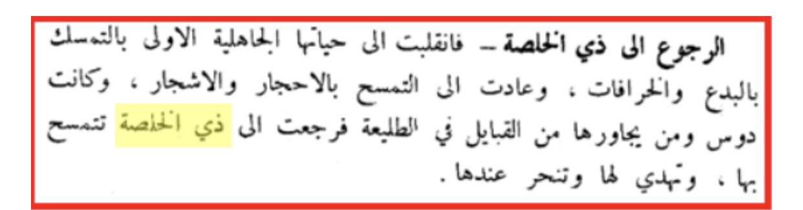
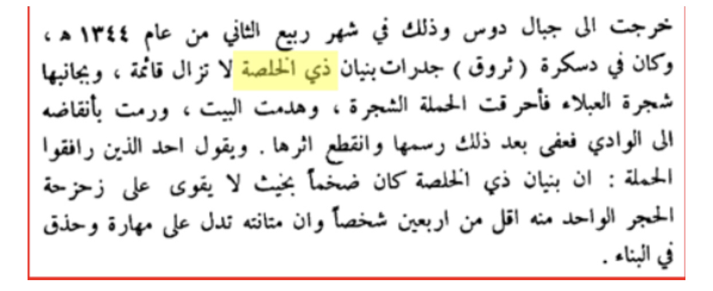
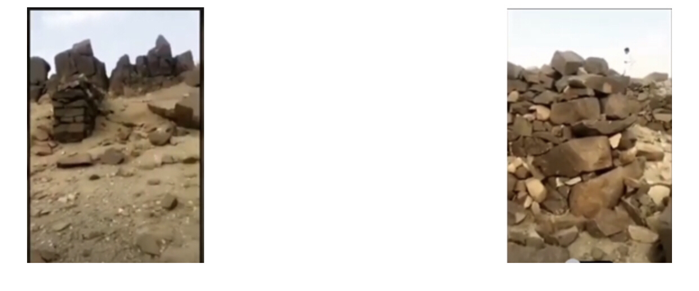
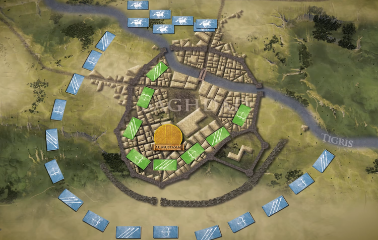

This section will further compliment the section where I analysed Muhammad ﷺ claim of prophethood, how, some of you may ask?
Well once I list some prophecies found in the Quran and hadith you will realise that it does not make any logical sense for Muhammad ﷺ to be anything but
a messenger of God just like he claimed 1400 years ago. ( I already know some will say prophecies can be used by members of other faiths to try prove theirs.
I have produced a separate section on that.)
I hope by this stage you have read “The Sealed Nectar” or you plan too it will help give you an overview into the life of Muhammad ﷺ
it is by no means a detailed account rather a comprehensive one but it is a good account that exists in the English language.
I will provide some prophecies but I will not provide all of them as there are many, I will however be providing you with a series as well as a small playlist
at the end, where you can learn more. I will also analyse some objections as well as some may argue that some are “self-fulfilling” or that it is an “easy prophecy.”
I want you to remember that what you are going to see in this section came from the mouth of an uneducated illiterate man in the 7th century living in the desert
as a Bedouin merchant, some people fail to realise this.
ABU LAHAB
A bitter enemy of Muhammad ﷺ was a man called Abd al-ʿUzzā ibn ʿAbd al-Muṭṭalib also known as Abu Lahab.
This man hated Muhammad ﷺ with a passion. He hated Islam and everything about it.
He hated how Muhammad ﷺ was preaching Islam and how people were following him.
The following chapter of the Quran is called Surah Masaad was revealed around 616AD.
Why is this important? Well read the chapter.
Surah Masaad revealed in 616AD prophesised that Abu Lahab would die a disbeliever.
In the following eight years all Abu Lahab had to do was accept Islam.
He never accepted Islam and died in 624AD.
Thus, the prophecy of the Quran is true
This prophecy is not self fulfilling and by no means easy. A similar example to this is also Walid ibn al-Mughirah.
Like Abu Lahab all he had to was accept Islam but exactly like Abu Lahab he died a disbeliever just like the Quran said would happen in chapter 74.
BYZANTINE COMEBACK AGAINST PERSIA
The below is from the forbidden prophecies. I will be using this book again throughout. Please do read the whole book.
It is free and I have linked it in the footnotes for you. [2]
The Byzantine and Persian Empire were two leading super powers in the seventh century. In the year 602 CE, the world watched on as they went to all-out war.
From the beginning, the Persian war machine overwhelmed the Byzantines who were facing internal rebellion and thus were at a disadvantage.
After a series of devastating losses, the Byzantines couldn’t stop the Persian onslaught. Then the unthinkable happened, the city of Jerusalem,
which was the heart of Christianity, was captured and desecrated by the Persians. The True Cross, a relic which Christians believe was the actual cross that Jesus was crucified on,
was stolen and taken back to Persia. The Byzantines were Christian and the loss of Jerusalem was a major psychological blow for them.
The war between the two empires was not just purely a political or 59 economically motivated one, there was a religious element to it.
The world was one in which Christianity and Zoroastrianism were opposed to one another.
This great loss of the Byzantine Christians to the Persians made the idol worshippers of Arabia happy and they used this incident to mock the Muslims.
Muhammad’s close companion Ibn Abbas noted at the time: “The idolaters wanted the Persians to prevail over the Byzantines, because they were idol worshippers,
and the Muslims wanted the Byzantines to prevail over the Persians, because they were people of the Book (Christians)”. In response to these losses,
Muhammad received some new revelation. The Qur’an made the following bold prediction:
“The Byzantines have been defeated in a nearby land. They will reverse their defeat with a victory, within three to nine years.
The whole matter rests with God before and after victory”. [30:2-4]
The Qur’an prophesied that within 9 years the whole situation would be completely reversed with a Byzantine victory over the Persians.
This prophecy was revealed in the year 615 CE when the Persians had completed their conquest of Syria. This prediction of a Byzantine victory is the exact
opposite of what political commentators would have predicted at the time, because the Byzantine Empire was badly losing and on the verge collapse.
The Historian Edward Gibbon highlights the unlikelihood of the prophecy coming true:
“Placed on the verge of the two great empires of the East, Mahomet [Muhammad] observed with secret joy the progress of their mutual destruction;
and in the midst of the Persian triumphs, he ventured to foretell, that before many years should elapse, victory should again return to the banners of the Romans.
AT THE TIME WHEN THIS PREDICTION IS SAID TO HAVE BEEN DELIVERED, NO PROPHECY COULD BE MORE DISTANT FROM ITS ACCOMPLISHMENT,
since the first twelve years of Heraclius announced the approaching dissolution of the empire.”
Even after Muhammad received revelation about a Byzantine victory, the situation for the Byzantines remained precarious. At one point, the Byzantine emperor Heraclius
considered moving the Government that was based in the capital Constantinople to Carthage in Africa. However, Persian conquests continued and they went on to defeat the Byzantines
in Egypt and take over that province. As the Byzantines conceded territory, they lost much needed tax revenues, and to add to their misery a plague broke out in 619 CE,
which further damaged their tax revenues. After conquering Egypt, the Persian emperor Khosrow sent Heraclius the following letter:
“Khosrow, greatest of Gods, and master of the earth, to Heraclius, his vile and insensate slave. Why do you still refuse to submit to our rule, and call yourself a king?
Have I not destroyed the Greeks? You say that you trust in your God. Why has he not delivered out of my hand Caesarea, Jerusalem, and Alexandria?
And shall I not also destroy Constantinople? But I will pardon your faults if you submit to me, and come hither with your wife and children;
and I will give you lands, vineyards, and olive groves, and look upon you with a kindly aspect. Do not deceive yourself with vain hope in that Christ,
who was not able to save himself from the Jews, who killed him by nailing him to a cross. Even if you take refuge in the depths of the sea,
I will stretch out my hand and take you, whether you will or no.”
The situation for the Byzantines got so bad that according to the seventh century Armenian historian Sebeos, when the Persians reached Chalcedon,
a city close to Constantinople which was the very heart of the Byzantine Empire, Heraclius had agreed to stand down and was ready to become a
client of the Persian emperor.
Even though the Byzantine Empire was very far from a victory, in the year 622 CE, just 7 years after the Qur’an made its bold prediction,
they started a counter attack. The Persians had set up an ambush in Cappadocia in modern day Turkey. This backfired when it was pre-emptively discovered
by Heraclius, so he lured the Persians into a trap and crushed them. This unexpected turn of events caught the Persians off guard and
thus began of a series of attacks by the Byzantines in which they recovered their prestige and their lands.
In 624 CE, exactly 9 years after the Qur’an made its prophecy, the Byzantines had managed to avenge Jerusalem.
They invaded the Persian heartland, defeated their army and then destroyed the famous Persian fire temple of Takht-i-Suleiman.
Just as the desecration of Jerusalem and the theft of the True Cross was a psychological blow to the Christians, the destruction of the fire temple
“The Romans captured their (Persians’) camp and all their gear. They raised their hands on high and thanked God; they also eagerly prayed for the Emperor,
who led them well. For before they had never thought to see Persian dust; now they had found and plundered their still pitch tents.
Who could have expected the invincible Persian race ever to show its back to the Romans?”
The prophecy came true in exactly the time frame that the Qur’an stipulated. There are so many ways in which this prophecy could have gone wrong if Muhammad was guessing.
For example, if the Byzantines started their counter attack in year 625 rather than 622 then the fulfilment of the prophecy would have been outside of the 3-to-9-year time frame.
If Muhammad was guessing then he would have said that the Persians will win as that was the trend at the time.
Why would he risk the Qur’an’s reputation by claiming that a Byzantine battlefield victory would happen in such a short time?
Someone who is a liar or false prophet would not make such a prediction it simply does not make any sense at all.
TALL BUILDINGS
One of the most well-known prophecies of Muhammad ﷺ is the prophecy that Arabs would compete in the construction of tall buildings.
Remember he made this prediction in the 7th century. The following is from the book “The Forbidden prophecies” pages 55-59.
You can read this book for free; I have linked it in the footnotes.[3]
In the following prophecy, Muhammad was asked about the signs of the “Last Hour” (meaning the approach of the Day of Judgement).
He stated that a very specific group of people would one day compete in the construction of tall buildings:
“Now, tell me of the Last Hour,” asked the man. The Prophet replied, “The one asked knows no more of it than the one asking.”
“Then tell me about its signs,” said the man. The Prophet replied, “That you see barefoot, unclothed herdsmen competing in the construction of tall buildings.”
Notice the detailed characteristics that Muhammad provided: the barefoot, unclothed herdsmen were mentioned.
When Muhammad was asked about the identity of these people, he responded by identifying the Arabs: “It was said: ‘Who are the barefoot herdsmen?’
He [Muhammad] answered: ‘The Arabs’”.
We can see that Muhammad prophesied that a very specific group from among the Arabs, the barefoot, unclothed herdsmen,
would one day compete in constructing tall buildings. In fact, this detailed description refers to a very particular type of Arab, the Bedouins.
From millennium past there are two types of Arabs, city dwellers and Bedouins. The former makes up the majority and live in ancient cities like Damascus,
Cairo, and Baghdad. In contrast, the Bedouins are nomads, they travel through the vast deserts and are constantly on the move.
Even during the Golden Age of Islam when the Arabs were the richest and most learned people on earth, Bedouins remained in virtually the same state they
had been for thousands of years, poor, uneducated and cut off from rest of the world. As recently as the 1940s the English explorer Sir Wilfred Thesiger
was travelling through the deserts inhabited by the Bedouin and documented their condition:
“As I listened I thought once again how precarious was the existence of the Bedu. Their way of life naturally made them fatalists; so much was beyond
their control. It was impossible for them to provide for a morrow when everything depended on a chance fall of rain or when raiders, sickness,
or any one of a hundred chance happenings might at any time leave them destitute, or end their lives. They did what they could, and no people were more
selfreliant, but if things went wrong they accepted their fate without bitterness, and with dignity as the will of God.”
Many early Muslim scholars and classical commentators understood Muhammad’s prophecy to be a reference to the Arab Bedouins who were known as the
“people of the desert”. The famous jurist Imam an-Nawawi (1233 – 1277) said the following in his interpretation of Muhammad’s prophecy:
“The people of the desert and their like are people of need and poverty. (A time will come) when the world will be laid open for them until
they compete with one another in (the construction of) buildings, and God knows best.”
The renowned scholar Al-Qurtubi (1214 – 1273) said:
“What is meant here is the prediction of a reversal in society whereby the people of the desert will take over the conduct of affairs and
rule every region by force. They will become extremely rich and their primary concern will be to erect tall buildings and take pride in them.”
The respected scholar Ibn Hajar (1372 – 1449) said of the prophecy:
“What is meant by them is the people of the desert”.
We can see that these early Muslim scholars and classical commentators, who were writing centuries ago, were consistent in their identification
of the Arab Bedouins. This shows just how clear Muhammad’s description of these people was. Today we find in the Arabian Peninsula that a particular
group of Arabs, the Bedouins who used to be impoverished herders of camels and sheep until the mid-twentieth century, are now competing to build the
tallest tower blocks, just as Muhammad foretold. How did this change happen seemingly overnight? How did one of the poorest people on earth,
who literally wore rags, become one of the wealthiest nations on earth? One thing made this rapid change possible,
something upon which the modern world would revolve around perhaps more than any other, the discovery of “black gold”, oil.
The seemingly empty deserts of the Bedouins had it in abundance. The Bedouins went from camels to Cadillacs in a generation!
Today one of the highest concentrations of tall buildings in the world is in the Arabian peninsula, specifically the areas in which Bedouin Arabs lived.
In 2012 the tallest building in the world was the Mecca Clock Tower, standing at 601 metres, this gigantic structure was built in the desert
city where Muhammad was born. Only two years after its completion, the Burj Khalifa was built in Dubai with a height of 828 metres.
A short time after the Burj Khalifa was completed, a rival family in Saudi Arabia announced that they would build a taller one (1,000 metres);
the Kingdom Tower. The Bedouin Arabs of today are literally competing with each other over who can build the world’s tallest building. 57
What would motivate Muhammed to even make such a prediction? If he was going to make up such a prophecy it would make more sense to relate this prophecy
to the superpowers of his time: Rome, Persia, or even China who (unlike the Arabs) already had a tendency to construct extravagant buildings and palaces.
For example, the Hagia Sophia cathedral was built by a Roman emperor in 537 CE, the century before Muhammad, and it remained the world’s largest cathedral for nearly a thousand years.
Furthermore, the immense detail that Muhammad provided in this prophecy is very revealing. Frauds, those who falsely claim to be able to predict the future,
typically make their predictions general and ambiguous in nature so that they can be applied to multiple situations.
The more general and ambiguous the prophecy, the greater the chance that something, somewhere, will eventually occur that bears enough of a resemblance
that it will seem like the prophecy was an accurate prediction. Muhammad could have made a prediction such as “you will see the construction of tall buildings”.
Such a prediction uses very general descriptions that are flexible enough to be applied to anyone in the world. By comparison,
the prophecy that Muhammad did make is filled with lots of very specific details.
He gave a clear context for the building construction, that of competition. He also identified who the builders would be, the Arab Bedouins,
by describing some unique distinguishing features such as their physical appearance (“barefoot and unclothed”) and their way of life (“herdsmen”).
We can see that such a prophecy contains multiple variables, each of which is very detailed and must be fulfilled in a very specific manner,
which strictly limits how the event could happen.
The construction of tall buildings among the Arab Bedouins has even reached Mecca, Muhammad’s city of birth.
The last few decades have seen a massive surge in building construction in Mecca. The famous Mecca Clock Tower is currently the third tallest building
in the world. In order for such construction to be possible, many of Mecca’s ancient mountains have been demolished in order to make room for the tall buildings
that have sprung up.
Amazingly, this is also something that Muhammad foretold; he said that mountains will one day be moved from their places:
“The Hour will not be established until mountains are moved from their places”.
This tremendous feat of demolishing entire mountains has only been possible in the twentieth century with the advent of technology such as explosives.
Thanks to these modern technical advances, mountains can now be blasted into rubble in order to make room for massive city infrastructure such as buildings
and highways. It’s important to point out that Muhammad himself did not like Muslims to be involved in trying to unnecessarily increase in wealth.
Indeed, he often warned of its dangers and how it would corrupt his nation. He did not like or promote the construction of extravagant buildings.
He was a simple man who lived in a simple house and wanted other Muslims to maintain that simplicity. That is what he taught and how he lived.
So, if he wanted to “will” this prophecy to become true, he would have encouraged the Arabs to build tall buildings and perhaps start off trying to do that himself!
In fact the Qur’an itself discourages such behaviour:
“Do you build on every height a monument? Vain is it that you do. And you make strong fortresses as if you were to live forever?” [26:128-129].
People today are not amazed by this prophecy because they look at it through the lens of the 21st century. I have to reiterate that Muhammad ﷺ made this prediction
1400 years ago in the desert of Arabia.
Please ponder on this and reflect.
PROPHECY OF SURAQA IBN MAILK AND THE BRACELTS OF KHOSRAU
Also known as Chosroes or Kisram, Muhammad ﷺ made the prophecy very early on in his prophetic career that Suraqa Ibn Malik would one day where the bracelets
of Khusrow bin Hormuz who was the Persian king. Now why is this special you may ask. As mentioned, this was early on in his prophetic career.
It assumed many things that were completely out of his control such as the Muslims conquering Persia, the bracelets still existing, the king still alive,
Suraqa to be alive. It is like me saying to a random homeless person in Europe, one day you will wear the crown jewels of the Queen of England.
It’s impossible. The prophecy that Muhammad ﷺ made seemed impossible. Now it is time to first share the evidences and relate the story.
If you want to watch some YouTube videos on this. Check the footnotes. [4]
Narrated Al-Bara’ bin ‘Azib:
Abu Bakr came to my father who was at home and purchased a saddle from him. He said to ‘Azib. “Tell your son to carry it with me.”
So I carried it with him and my father followed us so as to take the price (of the saddle). My father said, “O Abu Bakr!
Tell me what happened to you on your night journey with Allah’s Apostle (during Migration).” He said, “Yes, we travelled the whole night and also the next
day till midday. when nobody could be seen on the way ( because of the severe heat) . Then there appeared a long rock having shade beneath it,
and the sunshine had not come to it yet. So we dismounted there and I levelled a place and covered it with an animal hide or dry grass for the Prophet
to sleep on (for a while). I then said, ‘Sleep, O Allah’s Apostle, and I will guard you.’ So he slept and I went out to guard him.
Suddenly I saw a shepherd coming with his sheep to that rock with the same intention we had when we came to it.
I asked (him). ‘To whom do you belong, O boy?’ He replied, ‘I belong to a man from Medina or Mecca.’ I said, ‘Do your sheep have milk?’ He said, ‘Yes.’
I said, ‘Will you milk for us?’ He said, ‘Yes.’ He caught hold of a sheep and I asked him to clean its teat from dust, hairs and dirt.
(The sub-narrator said that he saw Al-Bara’ striking one of his hands with the other, demonstrating how the shepherd removed the dust.)
The shepherd milked a little milk in a wooden container and I had a leather container which I carried for the Prophet to drink and
perform the ablution from. I went to the Prophet, hating to wake him up, but when I reached there, the Prophet had already awakened;
so I poured water over the middle part of the milk container, till the milk was cold. Then I said, ‘Drink, O Allah’s Apostle!’
He drank till I was pleased. Then he asked, ‘Has the time for our departure come?’ I said, ‘Yes.’ So we departed after midday. [5]
Suraqa bin Malik followed us and I said, ‘We have been discovered, O Allah’s Apostle!’ He said, Don’t grieve for Allah is with us.’
The Prophet invoked evil on him (i.e. Suraqa) and so the legs of his horse sank into the earth up to its belly.
(The subnarrator, Zuhair is not sure whether Abu Bakr said, “(It sank) into solid earth.”)
Suraqa said, ‘I see that you have invoked evil on me. Please invoke good on me, and by Allah, I will cause those who are seeking after you to return.’
The Prophet invoked good on him and he was saved. Then, whenever he met somebody on the way, he would say, ‘I have looked for him here in vain.’
So he caused whomever he met to return. Thus Suraqa fulfilled his promise.”
Narated By Anas bin Malik: Allah’s Apostle arrived at Medina with Abu Bakr, riding behind him on the same camel.
Abu Bakr was an elderly man known to the people, while Allah’s Apostle was a youth that was unknown.
Thus, if a man met Abu Bakr, he would day, “O Abu Bakr! Who is this man in front of you?” Abu Bakr would say,
“This man shows me the Way,” One would think that Abu Bakr meant the road, while in fact, Abu Bakr meant the way of virtue and good.
Then Abu Bakr looked behind and saw a horse-rider persuing them. He said, “O Allah’s Apostle! This is a horse-rider persuing us.”
The Prophet looked behind and said, “O Allah! Cause him to fall down.” So the horse threw him down and got up neighing.
After that the rider, Suraqa said, “O Allah’s Prophet! Order me whatever you want.” The Prophet said,
“Stay where you are and do not allow anybody to reach us.” So, in the first part of the day Suraqa was an enemy of Allah’s Prophet and in the last part of it,
he was a protector.
Also similar Hadith on subject:
To Suraqa, the Blessed Prophet ﷺ once said
” You will be wearing the two bracelets of the Chosroes.”
The Chosroes was destroyed during the caliphate of Umar. When the jewellery of the Chosroes arrived, Umar put the bracelets on Suraqa, saying.
“Praise be to Allah Who took these of the Chosroes and put them on Suraqa.” [7]
Now for the detailed story. [8]
When the Quraysh realised that the Messenger (ﷺ) of Allah had escaped, they offered a hundred camels to anyone who handed him over, dead or alive.
The Messenger (ﷺ) of Allah remained in the cave for three days and then left with ‘Air ibn Fuhayrah who guided him along the coastal route.
Suraqah ibn Malik ibn Ju’sham was eager to get the reward offered for the Messenger (ﷺ) of Allah. He was tracking his footsteps when his horse
stumbled and he was thrown off. He refused to give up so he mounted again and rode on. His horse stumbled a second time and he fell again.
Determined to capture his quarry, he rode on once more. Just as he caught sight of the Messenger (ﷺ) of Allah, his horse stumbled a third time.
Its feet sank into the sand and Suraqah fell. Then he watched as dust rose from the ground like a sandstorm in front of him.
When Suraqah saw that happen, he knew that the Messenger (ﷺ) of Allah was under the protection of Allah. He realised that the Messenger (ﷺ) of
Allah would certainly have the upper hand over his enemies. He called out, ‘I am Suraqah ibn Ju’sham. Wait for me so that I can speak to you.
By Allah, I will not harm you.’
The Messenger (ﷺ) of Allah said to Abu Bakr, ‘Ask him what he wants from us.’
‘Write a document for me which will be a warrant of security.’
The Messenger (ﷺ) of Allah asked ‘Air ibn Fuhayrah to write it and Suraqah kept the piece of leather (or bone) on which it was written for many years.
The Messenger (ﷺ) of Allah, looking ahead to the day when the Persian Empire would crumble, said to Suraqah, ‘How will you feel when you are wearing the
bracelets of Chosroes?’
And indeed, that event took place. When Persia was conquered, the bracelets, belt and crown of Chosroes were brought to Umar.
He summoned Suraqah ibn Malik and put the royal insignia on him.
Although Suraqah offered the Messenger (ﷺ) of Allah provisions for his journey to Madinah, they were not accepted. He only asked, ‘Conceal our presence.’
The Blessed Prophet(S) told him that he would one day wear the bangles of Khusrow of Iran. He asked in wonderment if Prophet(s)
meant the bangles of Khusrow bin Hormuz, the emperor of Iran. The Blessed Prophet(S) nodded in acknowledgement.
Suraqa entered the court of the Prophet(S) and declared shahadah.
Suraqa always rued the day he pursued The Blessed Prophet(s) for the mere earthly reward of 100 red camels.
He was struck with profound grief the day Blessed Prophet(S) died but remembered the promise of the Blessed Prophet(S)
that he would one day receive the bangles of Khusrow of Iran.
Years passed.
Iran was conquered during the caliphate of Umar ibn al-Khattab. Umar received a missive from Saad bin Abi Waqqas, commander of the
Islamic forces about the conquest of Iran. A fifth of the booty was sent to Umar in Madinah. It contained the famed crown of Khusrow
studded with rubies, a gold belt studded with pearls and the gold bangles.
Umar was looking at each of the items sent by the Commander of the forces. Suddenly Umar called Suraqa to him and put the crown on his head,
helped him don the gold embroidered dress and gold bangles.
Suraqa felt uncomfortable in the royal outfit. He raised his hands towards the sky and prayed: ‘O my Lord, how could I put on something
which your Prophet deserved far more than I? I smell the air of punishment in it.”
He then turned towards Umar and asked him to distribute all those royal appendages among the Muslims.
At the time of the Hijra (the migration from Mecca to Medina), the Prophet (s) and Abu Bakr were being chased across the desert.
The Quraysh were pursuing them and had a bounty of 100 camels placed on the Prophet’s head. In one gathering around Mecca,
a man came in and said he had seen two men walking through the desert and it was possible that they were Muhammad and Abu Bakr.
Suraqa ibn Malik, one of the Bedouins in the gathering, deceptively denied that this could be the case, but secretly left the gathering and
prepared his horse to pursue the two men. He wanted to gain the reward of 100 camels.
Abu Bakr would constantly be looking back and he was very worried about being caught, whereas the Prophet (s) was completely calm and reciting Quran.
When Suraqa ibn Malik came close to them, the front legs of his horse sank into the sand and he fell. He thought this odd because his horse never
did this before. So he got back onto his horse and continued pursuing them. The same thing happened again! The third time it happened,
he saw a wall of dust in front of him. So after this, when he approached the Prophet he came to beg for peace.
Initially he had come to kill the Prophet but now he was asking the Prophet for a pledge of protection!
So the Prophet (s) gave him the promise of protection from any future violence in writing, and he said to Suraqa ibn Malik:
“What about a day when you will be wearing the Bracelets of Kisra.” There was only one Kisra and everyone knew who this was,
but this statement was so shocking that Suraqa ibn Malik had to clarify again: “Kisra!?”
The Prophet (s) said “Yes, Kisra the son of Hermuz.”
Now these Bracelets were very famous, the equivalent to the Crown Jewels in our days. These large bracelets were worn by the Persian Kings,
who would simply rest their hands in them as a show of power. For a man who was fleeing persecution and on the brink of assassination,
this promise seemed hardly appropriate!
Years later, when the Muslims came to the land where Suraqa ibn Malik lived, they were going to kill him. But he pulled out this piece
of paper which had the Prophet’s promise on it, and this paper saved his life. He then became Muslim, and during the time of Umar he joined
the army that one day conquered Persia.
The treasures of Persia were brought back to Umar, and amongst the booty were these famous bracelets. Umar called Suraqa ibn Malik and told him
to wear the bracelets and tell the story to the people. So on that day, a Bedouin man from the Arabs was wearing the Bracelets of Kisra,
the most famous at the time – a promise given to him by the Messenger of Allah (s) decades before.
Long before the conquest of Iraq and Persia, the Prophet(s) gave Suraqa, who had chased after the Prophet(s ) when he emigrated from Makka to Madinah,
the glad tidings that he, Suraqa, would wear the bracelets of Chosroes, the son of Ormuz, the Emperor of Persia. [9]
Have you read all of this prophecy? Did you check the videos? Do you not find this mesmerising? How could Muhammad ﷺ make a prediction like that?
The prophecy heavily relied upon so many factors such as
That Muslims would conquer Persia a superpower at the time.
Even if that happened, they had to find the Persian King.
Even if that happened, they had to find his jewellery.
Even if they found that they had to find the bracelets.
Even if they found that Suraqa had to be alive.
Even if he was alive, they would have to find him and give it to him.
Muhammad ﷺ made the prophecy and what he said would happen, happened to the letter. This is not something any ordinary person would predict
when his people were weak and few in number. Nor is this something an impostor would predict; it simply does not make any sense at all.
Even suggesting that the Muslims would conquer Persia was an absurd prediction to make, yet it happened. You can’t argue that this is vague too,
it is a clear cut prophecy.
One of the things Suraqa said when he wore the bracelet.
He (suraqa) walked around with them proudly, tears flooding from his eyes, saying: “Behold, the honest and the trustworthy Muhammad (pbuh)
has told the truth after 20 years. He has kept his promise.” [10]
PROPHECY THAT DHI AL-KHILASA WOULD BE WORSHIPPED AGAIN
This is another example of an amazing prophecy. The short explanation for this is that Muhammad ﷺ said that towards the end of time a specific idol would be worshipped again.
Here is the hadith:
“Allah’s Messenger (ﷺ) said, “The Hour will not be established till the buttocks of the women of the tribe of Daus move while going round Dhi-al-Khalasa.”
Dhi-al-Khalasa was the idol of the Daus tribe which they used to worship in the Pre Islamic Period of ignorance.”
Around the 1800s, many Muslims turned to Bid’aa (innovation in religion), superstitions, venerating stones & trees.
Daws along with the surrounding tribes began dedicating offerings to Dhi-al-Khalasa & sacrificing to it.

When King Abd Al Azeez took control of the Hijaz area, he sent military campaigns to subdue tribes & bring them under his control.
A campaign was sent to the mountains of Daws in 1925.

The soldiers found the pillars of Dhi-al-Khalasa still standing as well as a tree they venerated called Al-Ablaa.
They burned the tree and destroyed the building of Dhi-al-Khalasa and threw the remains in a valley.

Above are images of the remains of this idol. In the footnotes is a video of the remains. [14]
Why is this such an amazing prophecy? Well Muhammad ﷺ mentioned an idol by name as well as a location. What he said happened exactly like he said it would.
Why would he risk his prophethood and say such a statement if he was not who he says he was? People may say that this is self-fulfilling? How?
Firstly, the people who worshipped this were a Bedouin tribe somewhere in Arabia and its highly unlikely they even knew of this hadith.
Secondly, even if they did why would they worship it when they would know that it would be shirk (associating partners with Allah) which is the greatest sin.
It does not make any sense. For those people who prefer a video explanation of this hadith, please see the footnotes. [15]
VEHICLES AND CAMEL HUMP HIJAB
From ’Abdullah ibn ‘Amr ibn al-‘Aas, who said, I heard the Prophet of Allah ﷺ say, “In the last [part] of my nation there will be men who ride on means
that resemble saddles. They will alight at the doors of the mosques. Their women are clothed but naked. On their heads are [what appears to be] like
the humps of [lean] camels. Curse them for they are cursed. If there were a nation from the nations to come after you, your women would serve them,
just as the women of the nations that were before you served you.” [16]
Shaikh al-Albaani mentioned another narration from al-Haakim which says, “They will mount their mayaathir until they come to the doors of their mosques,”
commenting on this he said, “… the word mayaathir is the plural of meetharah and Ibn al-Athir described it as, “… smooth and soft, made out of silk or a silk
brocade [heavy silk] which the rider places beneath him on the saddle on top of the camel.”
So now that you have come to know this, [you will understand that] al-Haakim’s narration explains that first one, and by combining
between the two the meaning will be that the saddles which they mount will be smooth and soft, and that they will resemble saddles, i.e.,
in terms of how wide they are.
… and this means that these saddles which those men will ride on at the end of time are not real saddles which are placed on the back of horses,
they only resemble saddles.
And if one bears in mind that [the word] ‘saddles’ [rihaal] is the plural of saddle [rahl] and that its explanation is as has been mentioned in
Misbaah al-Munir and others, i.e., ‘Everything that is used to prepare for a journey, from a container for goods, to a saddle for a camel.’
When you come to know this, it will become clear to you, with the Permission of Allah, that the Prophet ﷺ is alluding to those vehicles which
have been invented in this era, i.e., cars.
For they are comfortable, soft, and tender, like saddles. And what supports this is the fact that he ﷺ called them, ‘houses,’ as occurs in another
hadith which has preceded under number 93, but which, it became apparent later, contained some disconnection.
So the hadith contains another miraculous prophecy [which has come into being] other than the one related to the women who are clothed yet naked,
indeed it is the one connected to their men who get in those cars and stop at the doors of the mosques.
And by the everlasting existence of Allah, it is a true prophecy which we witness every Friday when cars gather in front of the mosques such that the roads,
despite their being wide, become congested, [and then] men alight from them to witness the Friday prayer, and most of them do not [even]
pray the five daily prayers, or at the very least they do not pray them in the mosques.
It is as though they have become content with praying the Friday prayer in place of the [five daily] prayers and for this reason
they can be found in large numbers on Fridays, stopping with their cars in front of the mosques. The fruits of prayer are not seen on them and nor
in their dealing with their women and daughters, so they, in truth, are those whose, ‘… women are clothed, yet naked …’
In addition to this, there is yet another manifestation which the hadith applies to totally: indeed it is what we see with cars following funeral processions
during recent times. People get in them who lack goodness from the rich and affluent who have abandoned the prayer.
Such that when the car carrying the corpse stops and the body is taken into the mosque to be prayed over, those affluent ones remain in front of the
mosque in their cars, maybe some of them will get out of them, waiting for the funeral in order to follow the processions to the grave,
out of social hypocrisy and [to pay mere] lip service, not as an act of worship or as a reminder of the Hereafter, and Allah’s Aid is sought.
This is the meaning of the interpretation of the hadith with me, if I am correct then it is from Allah, and if I am mistaken then it is from me,
and Allah the Highest is the One I ask to forgive [me] all my mistakes.[17]
There are two prophecies here, as you read the report talks about women’s heads would like the humps of a camel.
Isn’t the above image an accurate description? You compare this to the time of Muhammad ﷺ when the women’s Hijab style was not like a camel hump and was
flat how could Muhammad ﷺ know that women would do this? He also said women will be clothed but naked indicating that their clothing will not be in line
with Islamic guidelines, is this not how some Muslim women dress today, wearing tight clothing or not observing proper guidelines? The main prediction
is what seems to me to be the prediction of vehicles. How could he make a prediction like this? In a separate report he said
“Great distances will be traversed in short spans of time.”
Now you can link the two together. Back during Muhammad ﷺ time the mode of transport was horse/camel or walking. Yet here you read he predicted that
great distances will be traversed in shorter spans of time. Does this not add up to you? Yes, the language in the report used is descriptive and
figurative but this engages the mind and this hadith when read the before the construction of the first car would not make sense as one would question
what will men ride on that resemble saddles? Now it makes sense. One could argue that the latter report I shared “Great distances will be traversed
in short spans of time.” also found is Musnad Ahmad can refer to planes too. I think this one refers to many forms of transport.
If I take myself out the Islamic thought and look at this from a bias point of view it does look a lot like a predication of faster modes of transport.
An objection people may raise is something along the lines of “he is basically predicting civilisation would progress” this was said in the 7th century
in the desert by a man who only knew how to travel via camel or donkey. For Muhammad ﷺ to say a descriptive prophecy which if said 300/400 years ago
would be seen as “silly” is again a big deal, if he was not who he says he was he would not have made the predictions he did and he would not go into detail.
Even if you reject the vehicle interpretation, he still predicted how Muslim women change and he predicted it perfectly.
MANY MORE – CONCLUSION
Now there are many more examples I can provide of prophecies in the Quran and hadith. Linked in the footnotes is a playlist you simply have to go through
it also contains some videos about the content that is in the Quran that Muhammad ﷺ simply could not have known. I could add more videos to that playlist
but I have kept it short for you, so be sure to check it all out. [18] Please check out the links in the playlist description too.
I want you to honestly reflect after reading some of the prophecies from the Quran and Hadith I provided as well as checking out the playlist linked in
the footnotes. How did Muhammad ﷺ know this? Remember he was illiterate and he lived in a pagan environment. If you reject the idea, he got this from God then,
the only way he could have known the things in the Quran and Hadith would be if he was some sort of time traveller which we all know is ridiculous.
Moreover, some of the prophecies he gave were very specific, very. Someone who is liar or an impostor would not make prophecies such as the Suraqa and
Dhi-Al-Kahalsa one that I mentioned. Instead, they would all be all be very simple and generic or very easy to fulfil on your own.
30 more fulfilled prophecies
https://yaqeeninstitute.org/read/paper/the-prophecies-of-prophet-muhammad
The Prophet (ﷺ) said: “The Hour will not begin until time passes quickly, so a year will be like a month, and a month will be like a week,
and a week will be like a day, and a day will be like an hour, and an hour will be like the burning of a braid of palm leaves.
Sunan al-Tirmidhī 2332
https://sitn.hms.harvard.edu/flash/2019/no-not-just-time-speeds-get-older/
One of the most specific and shocking fulfilled Islamic prophecies, the Mongol Siege of Baghdad Prophecy stands out as an incredible piece of evidence for Islam.
Predicting the creation of a new city, predicting its location and layout, predicting its eventual growth and importance, and predicting its eventual destruction specifically
by the Mongols, there is no vagueness left in this prophecy.
When people think of the relationship between the Muslims and the Mongols, there is rarely anything positive to say. The Mongols were brutal in their oppression towards
anybody who resisted their rule and abuse. This, of course, has led to bitterness from many of their subjects. Although three out of the four Mongol successor states ended up
embracing Islam, this brutal image and bitterness remains.
One of the most infamous clashes between the Muslims and the Mongols was the Siege of Baghdad, which happened on 1258 AD,
when the Mongols sacked Baghdad and slaughtered almost every inhabitant of the historically rich city.
This siege is seen by many to have been the end of the Islamic Golden Age. What is not very well known, however,
is that this Siege of Baghdad was prophesied by the Prophet Muhammad (ﷺ) over 600 years before it happened.
The detail in this prophecy is stunningly detailed, and we will look at that detail in-depth.
The Prophet (ﷺ) said:
“Some of my people will descend onto low-lying ground they will call al-Basrah, beside a river called [the Tigris river] over which there will be a bridge.
Its people will be numerous and it will be one of the capital cities of the Muslims. At the end of times, the descendants of Qantura’ will come with broad faces
and small eyes, descending on the bank of the river.
The towns inhabitants will then split into three sections: One which will follow cattle into the desert and perish; another which will seek security
for themselves and perish; while the third will put their children on their backs and fight the invaders, and they will be the martyrs.” [1].
There is one thing to note here as well, which is that the Arabic word for “perish” in the line “another which will seek security for themselves and perish”
is Kafaru (كَفَرُوا), which can also mean “disbelieve”. This means that those that seek security for themselves either end up dying or disbelieving.
Both meanings are correct, as the only people who were spared were Christians and Shias like Nasir ad-Din at-Tusi.

Birds-eye representation of Baghdad during the siege. [2]
The details are specific and numerous, so breaking it down will make things easier to understand. They are as follows:
This will take place on low-lying ground called al-Basrah by the people.
It will take place next to the Tigris river.
There will be a bridge over the Tigris river at this point.
The city will be a capital city for the Muslims.
This cities inhabitants will be numerous (i.e. large in number).
This city will be invaded by the descendants of Qantura’, who are people described as having broad faces and small eyes.
The final section of the prophecy heavily implies that the Muslims will lose and be slaughtered.
The point above comes from the fact that the inhabitants are split into three sections: one which escapes into the desert and perishes, another seeking security for themselves
and perishing, and the final ones fighting and becoming martyrs. Notice how the groups that remained in the city end up dying in the city.
Finally, since no such city existed at the time, (A city next to the Tigris river, in an area called al-Basrah, having many inhabitants, etc.) it means that the final point is:
A new city will be created near the Tigris river by the Muslims; this city will become a capital city for the Muslims, eventually growing to have a large number of inhabitants.
Its amazing how much detail there is in this prophecy.
Those who already know about the Mongol Siege of Baghdad and its historical context will look at the bullet-points above and immediately be able to tell that every detail applies to this event.
Let’s go through it point-by-point.
A new city will be created near the Tigris river by the Muslims; this city will become a capital city for the Muslims, eventually growing to have a large number of inhabitants.
The only city this could be is Baghdad. It was founded in the year 762 CE as the capital of the Abbasid Caliphate, and eventually grew to become one of the largest centers of knowledge and one
of the largest cities in the world at the time due to its strategic location and geography. Its difficult to underestimate the importance of this city, as its cited by some to be the reason for
the centuries-long Islamic Golden Age.
As a consequence, Baghdad’s’ population skyrocketed, and by some estimates was the first city in history to reach over a million inhabitants. [3]
This will take place on low-lying ground called al-Basrah by the people.
Abu Dawud quotes an isnad reaching al-Ashraf where he says that:
“… close to the gates [of Baghdad] is an area called Bab al-Basrah… (translated as: The Door/Gate of al-Basrah)” [4].
A question may arise of why it was named by a part of the city instead of naming its whole. This seems to be similar to how we would speak about an
event that happened in one of the New York boroughs, like Manhattan or the Bronx, even if the event affected the entirety of New York.
Due to the massive size of Baghdad for its time, there were enough people that each section was distinct from the other similar to the boroughs.
If one looks at history before the destruction of Baghdad, they speak about these gates as people talk about New York boroughs today,
emphasizing that the city was large enough that such a distinction was necessary and significant.
For example, in adh-Dhahabis Tarikh al-Islam, it speaks about an event before the Siege of Baghdad and says: “الفتنة بين أهل الكرخ وباب البصرة”,
or “The fitnah between the people of Bab al-Karkh (another gate) and Bab al-Basrah:”. If the gates were just considered gates, and these names were
not commonly used or considered, then there would be no need for this distinction between the two groups of inhabitants. Since this shows that these names
were used and considered, the wording of the Hadith accurately applies to this city.
It will take place next to the Tigris river.
A portion of the Tigris river is contained within the borders of Baghdad. See the above image of Baghdad.
There will be a bridge over the Tigris river at this point.
Due to the city containing a portion of the Tigris river within its borders, a bridge was built to connect the two portions of the city to one another.
See the above image of Baghdad.
The city will be a capital city for the Muslims and,
This cities inhabitants will be numerous (i.e. large in number).
These two details are explained in the first point.
This city will be invaded by the descendants of Qantura’, who are people described as having broad faces and small eyes.
Surprisingly, the prophecy even states the ethnicity of the invaders and what they look like. This exactly describes the Mongol phenotype,
as they are a Central Asian people with broad faces and small eyes. Of course, the Mongol empire was ruled by the Mongolian people.
The final section heavily implies that the Muslims will lose and be slaughtered.
The Mongols built walls around the city during the siege, and this was for two reasons: one, to protect their siege engines and secondly,
to prevent any defenders from escaping. Once they entered the city, they killed everyone they could find and nobody was spared,
except for the Christians and people who were working with the Mongols to begin with, like at-Tusi.
Left: Mongol child. Right: Gobid phenotype, most typical in Mongolians and some other Central Asians. Directly described as having a “broad face”.
This is almost universally considered when the Islamic Golden Age ended, as the historical capital city of Baghdad with over a million
inhabitants was completely destroyed and depopulated. Baghdad, and the Muslims as a whole, would never fully recover from this.
As we can see, the hadith contains a prophecy so specific that it could not be mistaken for any event other than the Mongol Siege of Baghdad.
The Prophet (ﷺ) foretold the creation of a Muslim capital city on the Tigris river, which would eventually become the largest city in history at the time.
He foretold the name given to its area, the race and characteristics of those who will invade it, and the fate of the city. He even went as far as to
detail there being a bridge over the Tigris river at the point where all of this would occur. All being fulfilled exactly as described 600 years
after the prophecy was made, the evidence speaks for itself.
This cannot be from anyone except someone who was given knowledge of the unseen, a true prophet of God.
References:
Sunan Abi Dawud 4306; in-book reference: Book 39 Hadith 16
Kings and Generals: Mongols: Zenith of Empire - Siege of Baghdad 1258 and Battle of Ain Jalut 1260 DOCUMENTARY
See: Tertius Chandler's Four Thousand Years of Urban Growth: An Historical Census. Link to second-hand article.
‘Awn al-Ma’bud by ‘Athim ‘Abadi, Vol. 11, page 325.